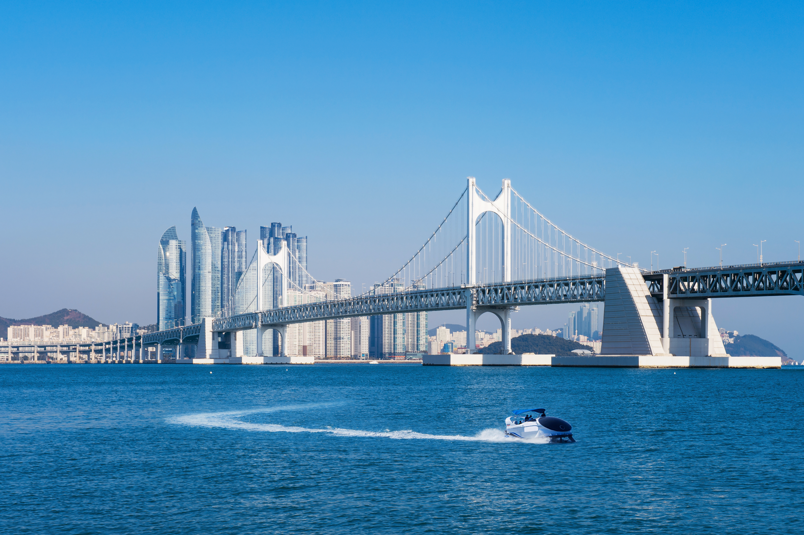
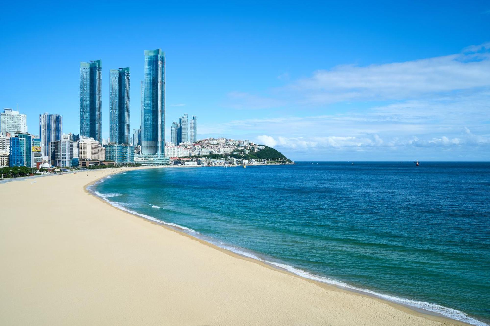
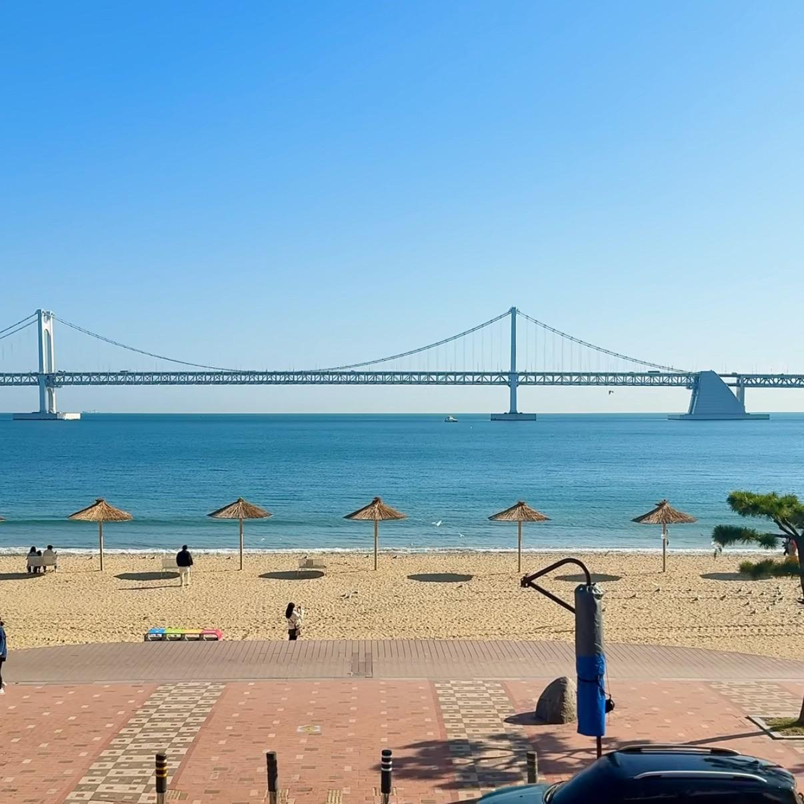

광안리 해변 GWANGAN BRIDGE
DIFFERENT PLACES, ONE AMAZING DAY.
↓
01 — DESTINATIONS
Find Your
Busan.
바다와 골목, 부산의 서로 다른 매력을 발견해 보세요.

01 / BEACH
해운대
넓은 백사장과 탁 트인 바다를 즐겨 보세요.
해운대는 부산을 대표하는 해변으로, 넓은 백사장과 아름다운 바다 풍경을 감상할 수 있는 곳입니다.
추천 활동: 해변 산책, 사진 촬영, 주변 카페 방문
방문 팁: 여유롭게 바다를 즐기려면 산책 시간을 넉넉히 잡아 보세요.
02 / CULTURE
감천문화마을
알록달록한 집과 골목길에서 부산의 매력을 만나 보세요.
감천문화마을은 알록달록한 집과 골목길, 다양한 벽화와 예술 작품이 특징인 곳입니다.
추천 활동: 골목길 산책, 포토존 방문, 예술 작품 감상
방문 팁: 오르막과 계단이 많으니 편한 신발을 신어 주세요.

03 / BEACH
광안리
광안대교의 아름다운 풍경과 활기찬 해변을 즐겨 보세요.
광안리는 광안대교를 바라보며 바다와 도시의 풍경을 함께 즐길 수 있는 부산의 대표적인 해변입니다.
추천 활동: 해변 산책, 야경 감상, 카페 방문
방문 팁: 저녁에는 조명이 켜진 광안대교를 감상하기 좋아요.
02 — LOCAL FOOD
Taste of
Busan.
부산 여행에서 놓치기 아쉬운 대표 먹거리를 만나 보세요.
돼지국밥
진한 국물과 부드러운 돼지고기가 어우러진 부산의 대표 음식.
밀면
시원한 육수와 쫄깃한 면발로 즐기는 부산의 별미.
씨앗호떡
달콤한 속과 고소한 씨앗이 들어간 길거리 간식.
03 — ONE DAY ROUTE
Your Day,
Well Spent.
이동 시간을 고려해 여유롭게 즐기는 하루 여행 예시.
-
09:00 AM
오전 · 해운대
해변을 산책하고 주변 카페에서 여유를 즐겨요.
-
01:00 PM
오후 · 감천문화마을
골목과 예술 공간을 둘러보고 사진을 남겨요.
-
06:00 PM
저녁 · 광안리
저녁 식사 후 바다와 광안대교 야경을 감상해요.
※ 시간과 순서는 예시입니다. 실제 이동 시간과 운영 정보는 방문 전에 확인하세요.
04 — TRAVEL NOTES
Before You
Go.
더 편안한 부산 여행을 위한 간단한 체크리스트.
이동 계획
방문 순서를 정하고 대중교통 경로와 환승 정보를 확인하세요.
준비물
편한 신발, 휴대전화 충전기, 날씨에 맞는 겉옷을 챙기세요.
방문 전 확인
운영 시간, 입장 가능 여부, 날씨를 미리 확인하세요.
05 — GOOD TO KNOW
Questions
Answered.
부산 여행을 준비하며 자주 궁금해하는 내용.
하루 동안 주요 명소 몇 곳을 방문할 수 있어요. 이동 시간을 고려해 2~3곳을 중심으로 계획하는 것이 좋아요.
지하철과 버스를 활용할 수 있어요. 출발 전 지도 앱으로 이동 시간과 환승 경로를 확인하세요.
날씨, 명소별 운영 시간, 대중교통 운행 정보와 현장 이용 안내를 확인하면 도움이 됩니다.